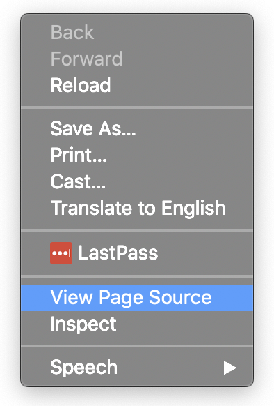
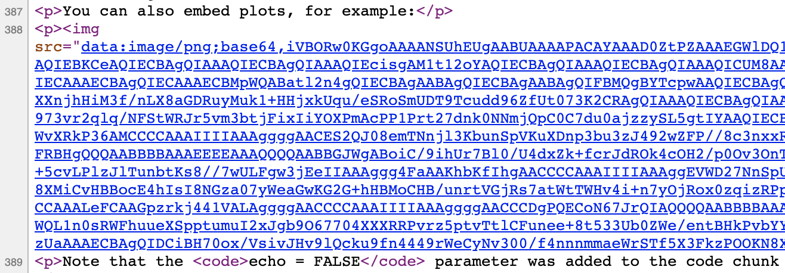
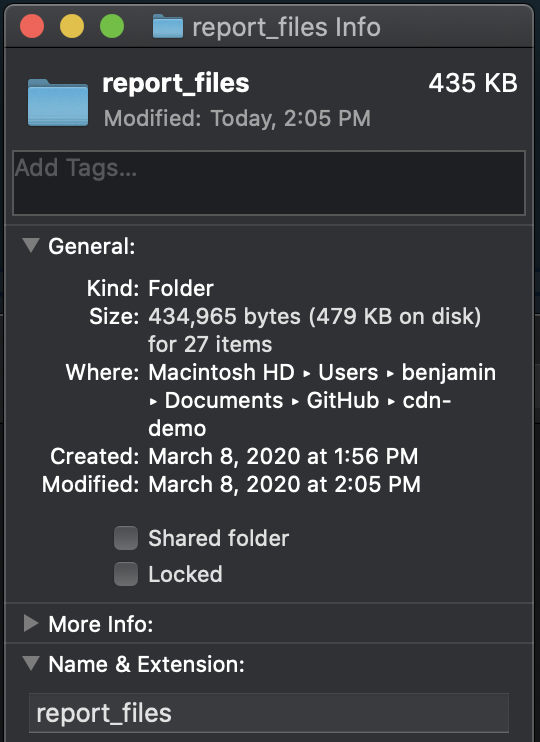
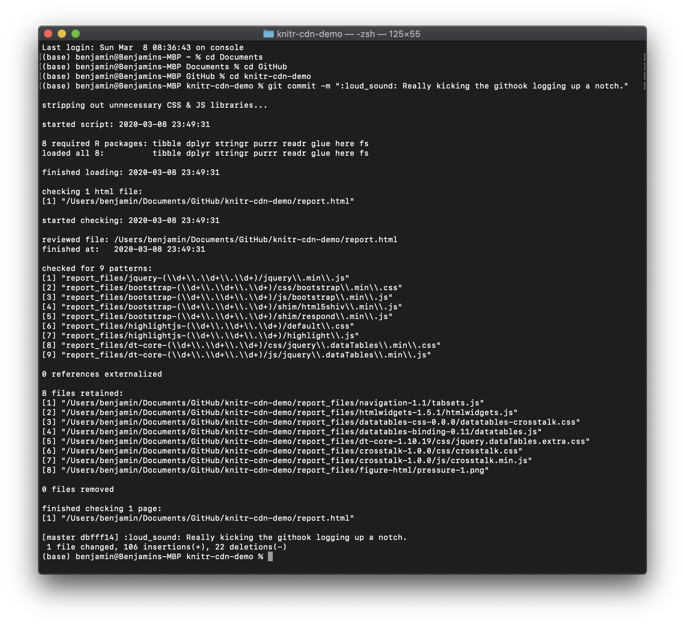

R Markdown: Shrink & Clarify Your HTML Output with CDNs
Your Output is Easy to Share
Have you ever noticed, when you render an R Markdown file as HTML, that it comes out as a single HTML file, easy to share with your readers?
If you haven’t noticed, or you don’t know what I mean, you can “follow along at home” with this minimal reproducible example.
(I follow this same example through the entire post. If you’d like to follow along but maybe don’t have your laptop in front of you, I put it up in a GitHub repository, and you can walk through the steps there. For the first section, check this commit and this one.)
In RStudio, from the New File menu at the top left, choose R Markdown….

In the dialog box, feel free to add a title. Then select HTML and hit OK.

Save the new file (I called it Report.Rmd) and then “knit” it,
either using the knit button at top or by hitting Control+Shift_K
(Command+Shift+K on a Mac).

What you’ll get is a single file called something like report.html.
Open it up to see a beautiful HTML version of the Rmd file you started with.
This one file can be sent to a stakeholder, who can then open it up and read it.

But It Could Be Smaller and Cleaner
Unfortunately, this simplicity comes with two costs.
File Size
The first is file size. If you look at your report itself, you’ll see that it’s quite small: less than a kilobyte.
But if you look at the HTML file, you’ll see it’s more than 700 kilobytes.

So what changed? It’s obviously not that HTML is 700x longer than markdown for the same text.
Two things changed:
- There’s now an embedded image (the plot).
- There are scripts and styling embedded in the file as well (JavaScript and CSS content).
And you might be surprised at how much each of those affects the size of the file.
| original size | take out the… | new filesize | so it accounted for… |
|---|---|---|---|
| 713 kB | image | 630 kB | 83 kB |
| 713 kB | scripts + styling | 93 kB | 620 kB! |
Clarity
The second cost of putting everything in one easy-to-share HTML file is clarity.
To see this cost, let’s peel back the curtain a little on the HTML file. If you’re viewing the report in the RStudio viewer, go to the top left and click Open in Browser:

Then with the report open in your browser of choice, right-click on the report and click View Page Source:

As you browse the page source, just under the title you’ll see what’s called minified JavaScript.
Let’s talk through that for a moment.
Minified Libraries
This small web page relies on a number of JavaScript and CSS libraries. One of them, the one depicted here, is a JS library called jQuery.
Normally, when your code relies on a library,
you simply refer to it at the top of the page with one line.
For example, if your R script relies on the lubridate package,
you might include a line like this at the top of your script:
library(lubridate)Now in your R script, that line relies on whoever’s running your code
having lubridate installed on their computer,
or being able to install it easily from CRAN.
But for an HTML report,
where would jQuery be installed on your reader’s computer?
Or what is CRAN for JavaScript?
To simplify all of that, and keep everything in one file,
report.html literally includes all of jQuery inside itself.
But libraries are big, of course—sometimes really big. So this code is what’s called a minified version of the library. White space, new lines, and comments are stripped out, and variable names are as short as possible. It’s not meant to be readable; it’s meant to save filespace.
Images
Likewise, images are actually included within the text of the HTML document, encoded as text. To see this, scroll down in the source to where you’d expect to see the picture:

You’ll see that the picture is a png file, but it’s encoded as a really long, otherwise meaningless text string.
And You Can’t Diff Files
All of this has consequences for your workflow, perhaps the biggest of which is that you can’t diff files.
If you don’t use git much for version control, or you don’t know the lingo, diffing files just means comparing files (or contrasting them, technically) to look for differences. Diffing files is very useful when you ask questions like “What changed since the last time I ran this report?” or “What have I accomplished since my last commit?” It’s what you see when you pull up a git UI and it shows you what’s changed.
The problem is that most interfaces won’t diff large files automatically, and some won’t diff them at all. For example, this is what GitHub Desktop shows when I try to diff my HTML:
But even when you can diff the files, all the gobbledeegook—both minified code and text-encoded images—makes it hard to make sense of the changes.
Intermission!
To reduce file size and increase clarity while keeping things easy to share, you’ll need 3 tips:
| tip (see below) | solves… |
|---|---|
| code externalization | clarity |
| content delivery networks (CDNs) | file size |
| file compression (.zip) | ease of use |
But before we do that I’d like to make just one change to our report. (If you’re following along in GitHub, see this commit.) You can skip this section if you like. All we’re doing is making the dataset summary section a little prettier.
Adding the DT Library
Here’s what the dataset summary looks like right now:

It’s functional and informative in the aggregate, though a little plain. But let’s say our client wants to be able to browse the actual data, and let’s say they like things to look a little prettier.
For that we use the DT library, which takes just 3 lines of code.
First make sure you’ve installed it:
install.packages("DT")Then add a library call to the setup code chunk in your report:
```{r setup, include=FALSE}
knitr::opts_chunk$set(echo = TRUE)
library(DT) # add this line
```And finally change the cars code chunk from this—
```{r cars}
summary(cars)
```—to this:
```{r cars}
datatable(cars)
```And now the HTML is super pretty!
I include this example to show that with every change to pretty up your report, add widgets or improve the styling, you’re going to continue adding minified JS or CSS and increasing the filesize. In this case, we’re now up to 916 kilobytes, another increase of 203 kB!
Externalizing Code
Now for the solution. First, we address the clarity of the code, so that you can diff files and meaningfully keep track of changes.
You’ll remember that the HTML file includes entire JavaScript libraries, minified and embedded within them. What we’re going to do is externalize those libraries so the code and the content live in separate places.
At the end of the YAML at the top of your file
is a line that tells knitr how to output results:
output: html_documentWe need to add to that so that knitr no longer tries to keep everything
in the same document:
output:
html_document:
self_contained: falseThe difference is dramatic. Suddenly the HTML file is only 7 kB in size (down 99%!):

All of that content has been moved to a separate folder called report_files.
In a way, this is a wonderful thing.
If you look at the diff from this commit in my GitHub repository,
it’s now far more readable.
Each library file shows up separately, and you can identify it easily
by the filename:

Personally I find this newfound clarity and readability refreshing. I encourage you to check out how clean the new HTML is, either in my repo or on your own.
But on the other hand, we’ve worsened the filesize bloat more than four-fold.
The new report_files folder takes up 4.3 megs!

In our case, 3.7 of those megabytes come from the Bootstrap library, which bills itself as “the most popular HTML, CSS, and JS library in the world.” Basically, it makes our content look pretty.

Now, filesize may not be an issue for you. If you host your files on a web server or shared file system, you might just send links. Sending links is usually the best way to share content anyway.
But if you have to send attachments, or if you send links but your shared space has storage restrictions, you’ll want to pare down.
Using Content Delivery Networks (CDNs)
At this point you might have a question:
If Boostrap is the most popular HTML, CSS, and JS library in the world, all these people can’t be hosting Bootstrap separately, can they? There’s got to be a way to point to a common location.
If you have that question (as I did), you would be right! And the way it’s done is called a Content Delivery Network, or CDN.
You can see an example of this on Bootstrap’s site:

The idea is simply to refer to these at the top of your page,
much like you’d include library(lubridate) at the top of an R script.
Getting Started
Currently, your file does something similar. It includes a reference to the Bootstrap library (along with other resources)—

—but the references are local, pointing to files in the report_files folder.
What we need, then, is to replace those references
with references to the Bootstrap CDN.
And of course we’ll go for not just Bootstrap, but as many of them as possible.
We’ll do this in three steps:
- First we find all the libraries we’re referencing, and see which ones have CDNs we can use.
- Then we swap the local references to CDNs and remove the files that are no longer necessary.
- Lastly we’ll automate the whole thing, so that every time we check in changes to our repository after knitting a report to HTML, all of this happens automatically.
Rounding Up Libraries
This step might be different for your scenario. Maybe you’re using HTML widgets, or maybe you’re not using Bootstrap. I go through the process first because some of the code may be exactly the same, and second so you can follow it for your own report.
So what are all the libraries we’re using? As you saw in the most recent screenshot, this is what we’re looking at:
<script src="report_files/jquery-1.12.4/jquery.min.js"></script>
<link href="report_files/bootstrap-3.3.5/css/bootstrap.min.css" rel="stylesheet" />
<script src="report_files/bootstrap-3.3.5/js/bootstrap.min.js"></script>
<script src="report_files/bootstrap-3.3.5/shim/html5shiv.min.js"></script>
<script src="report_files/bootstrap-3.3.5/shim/respond.min.js"></script>
<script src="report_files/navigation-1.1/tabsets.js"></script>
<link href="report_files/highlightjs-9.12.0/default.css" rel="stylesheet" />
<script src="report_files/highlightjs-9.12.0/highlight.js"></script>
<script src="report_files/htmlwidgets-1.5.1/htmlwidgets.js"></script>
<link href="report_files/datatables-css-0.0.0/datatables-crosstalk.css" rel="stylesheet" />
<script src="report_files/datatables-binding-0.11/datatables.js"></script>
<link href="report_files/dt-core-1.10.19/css/jquery.dataTables.min.css" rel="stylesheet" />
<link href="report_files/dt-core-1.10.19/css/jquery.dataTables.extra.css" rel="stylesheet" />
<script src="report_files/dt-core-1.10.19/js/jquery.dataTables.min.js"></script>
<link href="report_files/crosstalk-1.0.0/css/crosstalk.css" rel="stylesheet" />
<script src="report_files/crosstalk-1.0.0/js/crosstalk.min.js"></script>Let’s notice a few things about what we’re looking at:
- Each of these is either a link (for a CSS file) or a script (for JavaScript).
- The part we want to change is in quotes after
href=orsrc=. - Each time it starts with
report_files/, since that’s where all the local libraries are stored. - Each of them has semantic versioning (or semver): generally x.y.z, where x is the major version, y the minor version, and z the current patch.
With that in mind, let’s write it a little more cleanly:
| Filepath w/in report_files | Version |
|---|---|
| jquery-x.y.z/jquery.min.js | 1.12.4 |
| bootstrap-x.y.z/css/bootstrap.min.css | 3.3.5 |
| bootstrap-x.y.z/js/bootstrap.min.js | 3.3.5 |
| bootstrap-x.y.z/shim/html5shiv.min.js | 3.3.5 |
| bootstrap-x.y.z/shim/respond.min.js | 3.3.5 |
| navigation-x.y/tabsets.js | 1.1 |
| highlightjs-x.y.z/default.css | 9.12.0 |
| highlightjs-x.y.z/highlight.js | 9.12.0 |
| htmlwidgets-x.y.z/htmlwidgets.js | 1.5.1 |
| datatables-css-x.y.z/datatables-crosstalk.css | 0.0.0 |
| datatables-binding-x.y/datatables.js | 0.11 |
| dt-core-x.y.z/css/jquery.dataTables.min.css | 1.10.19 |
| dt-core-x.y.z/css/jquery.dataTables.extra.css | 1.10.19 |
| dt-core-x.y.z/js/jquery.dataTables.min.js | 1.10.19 |
| crosstalk-x.y.z/css/crosstalk.css | 1.0.0 |
| crosstalk-x.y.z/js/crosstalk.min.js | 1.0.0 |
I was able to find CDNs for the 9 green rows, simply by googling [name of library] [version] CDN for each one.
Here, in order, are the ones I found. While I tried to match the versioning, if it was close sometimes I took what I could get.
| CDN | Version Googled | Version Found |
|---|---|---|
| https://code.jquery.com/jquery-1.12.4.min.js | 1.12.4 | 1.12.4 |
| https://maxcdn.bootstrapcdn.com/bootstrap/3.3.5/css/bootstrap.min.css | 3.3.5 | 3.3.5 |
| https://maxcdn.bootstrapcdn.com/bootstrap/3.3.5/js/bootstrap.min.js | 3.3.5 | 3.3.5 |
| https://oss.maxcdn.com/html5shiv/3.7.3/html5shiv.min.js | 3.3.5 | 3.7.3 |
| https://oss.maxcdn.com/respond/1.4.2/respond.min.js | 3.3.5 | 1.4.2 |
| https://cdn.jsdelivr.net/gh/highlightjs/cdn-release@9.18.0/build/styles/default.min.css | 9.12.0 | 9.18.0 |
| https://cdn.jsdelivr.net/gh/highlightjs/cdn-release@9.18.0/build/highlight.min.js | 9.12.0 | 9.18.0 |
| https://cdn.datatables.net/1.10.20/css/jquery.dataTables.min.css | 1.10.19 | 1.10.20 |
| https://cdn.datatables.net/1.10.20/js/jquery.dataTables.min.js | 1.10.19 | 1.10.20 |
Removing Them
To be clear, the next step is very straightforward. We simply have to replace the strings that look like this—
report_files/bootstrap-3.3.5/css/bootstrap.min.css—with ones that look like this:
https://maxcdn.bootstrapcdn.com/bootstrap/3.3.5/css/bootstrap.min.cssThen, since the file report_files/bootstrap-3.3.5/css/bootstrap.min.css
is no longer needed, we can delete it from report_files.
We’re going to do these steps manually first, and then try scripting them.
Manual Example
So first open report.html in your favorite text editor:

Then delete the href:

This is a great opportunity to take a look behind the scenes. Remember what the report looked like before you deleted that href:

If you save the report right now, with the href deleted out, and open it in Chrome, it looks like this instead:

Seeing this helps you understand what Bootstrap was doing for our report, and it also helps verify when we fix it. Now copy-paste in the URL of the CDN—

—and save and open in Chrome again. Everything’s back to normal! The CDN worked.
Since the CDN worked, we no longer need the file
report_files/bootstrap-3.3.5/css/bootstrap.min.css and we can delete it.

You can even refresh the page in Chrome now, and you’ll see it still works without the local file.
So now, since that worked, it’s time to take care of the rest of the references! In cooking-show style, I’ll simply pull the completed pie from the oven and show you what it looks like.
This is the section right under the title in the HTML file. You can copy-paste them into your file if you’re following along at home.
<script src="https://code.jquery.com/jquery-1.12.4.min.js"></script>
<meta name="viewport" content="width=device-width, initial-scale=1" />
<link href="https://maxcdn.bootstrapcdn.com/bootstrap/3.3.5/css/bootstrap.min.css" rel="stylesheet" />
<script src="https://maxcdn.bootstrapcdn.com/bootstrap/3.3.5/js/bootstrap.min.js"></script>
<script src="https://oss.maxcdn.com/html5shiv/3.7.3/html5shiv.min.js"></script>
<script src="https://oss.maxcdn.com/respond/1.4.2/respond.min.js"></script>
<script src="report_files/navigation-1.1/tabsets.js"></script>
<link href="https://cdn.jsdelivr.net/gh/highlightjs/cdn-release@9.18.0/build/styles/default.min.css" rel="stylesheet" />
<script src="https://cdn.jsdelivr.net/gh/highlightjs/cdn-release@9.18.0/build/highlight.min.js"></script>
<script src="report_files/htmlwidgets-1.5.1/htmlwidgets.js"></script>
<link href="report_files/datatables-css-0.0.0/datatables-crosstalk.css" rel="stylesheet" />
<script src="report_files/datatables-binding-0.11/datatables.js"></script>
<link href="https://cdn.datatables.net/1.10.20/css/jquery.dataTables.min.css" rel="stylesheet" />
<link href="report_files/dt-core-1.10.19/css/jquery.dataTables.extra.css" rel="stylesheet" />
<script src="https://cdn.datatables.net/1.10.20/js/jquery.dataTables.min.js"></script>
<link href="report_files/crosstalk-1.0.0/css/crosstalk.css" rel="stylesheet" />
<script src="report_files/crosstalk-1.0.0/js/crosstalk.min.js"></script>Deleting Files
Now, in the previous section after we deleted bootstrap.min.css,
we only deleted that one file, but we left the rest standing.
But we don’t have to be that careful.
You’ll notice there are just 7 local references left in report_files:
navigation-1.1/tabsets.jshtmlwidgets-1.5.1/htmlwidgets.jsdatatables-css-0.0.0/datatables-crosstalk.cssdatatables-binding-0.11/datatables.jsdt-core-1.10.19/css/jquery.dataTables.extra.csscrosstalk-1.0.0/css/crosstalk.csscrosstalk-1.0.0/js/crosstalk.min.js
Why not just keep those files and delete the rest? You can do this manually any way you want to, but it’s easiest for me to consolidate the important files to a temp directory,

delete the rest,

and then move the important files back.

Please notice along with the important files
I also kept the folder figure-html,
since that’s where our plot lives!
Whatever script we write will have to find that as well.
Pause: What We’ve Accomplished
I want to take a moment to celebrate our successes. First, if you open your HTML file in Chrome, you’ll find that everything works. We’ve replaced the local references with CDNs, and we truly no longer needed the local files!
Second, the report_files folder is now only 435 kB:
90% smaller than the original folder,
and less than half the size of the original file
before we split out the libraries.

If you don’t care to script or automate the process, feel free to skip down to Zipping Your Files and call it good!
Writing a Script
Now comes the time when we ask ourselves:
This seems pretty straightforward. Do you think we can do it in a script?
And the answer is, of course we can! This is R. There’s got to be a way to do it.
To slow things down, I’m going to write it piece by piece. If you’re impatient and want to skip to the end, go for it!
Swapping in CDNs
First we’ll do some setup work that should be fairly self-explanatory.
library(tidyverse)
library(here)
# make a tibble of references to be replaced
references <- tibble(
local_file = c(
"jquery-1.12.4/jquery.min.js",
"bootstrap-3.3.5/css/bootstrap.min.css",
"bootstrap-3.3.5/js/bootstrap.min.js",
"bootstrap-3.3.5/shim/html5shiv.min.js",
"bootstrap-3.3.5/shim/respond.min.js",
"highlightjs-9.12.0/default.css",
"highlightjs-9.12.0/highlight.js",
"dt-core-1.10.19/css/jquery.dataTables.min.css",
"dt-core-1.10.19/js/jquery.dataTables.min.js"
),
cdn_url = c(
"https://code.jquery.com/jquery-1.12.4.min.js",
"https://maxcdn.bootstrapcdn.com/bootstrap/3.3.5/css/bootstrap.min.css",
"https://maxcdn.bootstrapcdn.com/bootstrap/3.3.5/js/bootstrap.min.js",
"https://oss.maxcdn.com/html5shiv/3.7.3/html5shiv.min.js",
"https://oss.maxcdn.com/respond/1.4.2/respond.min.js",
"https://cdn.jsdelivr.net/gh/highlightjs/cdn-release@9.18.0/build/styles/default.min.css",
"https://cdn.jsdelivr.net/gh/highlightjs/cdn-release@9.18.0/build/highlight.min.js",
"https://cdn.datatables.net/1.10.20/css/jquery.dataTables.min.css",
"https://cdn.datatables.net/1.10.20/js/jquery.dataTables.min.js"
)
)
# set the filepath information
html_file <- here("report") # filepath without the extension
fullpath <- paste0(html_file, ".html") # actual name of HTML file
dir_path <- paste0(html_file, "_files") # directory of local libraries
# also just the name of the directory will come in handy
dependency_dir <- "report_files"
# grab the page contents
page_contents <- read_lines(fullpath)Note: If you’re not familiar with the here package,
I highly recommend Jenny Bryan’s ode,
“I love the here package. Here’s why.”
In this case html_file should be wherever report.html lives
(e.g. /Users/benjamin/Documents/report.html),
but without the .html file extension.
Now let’s make the replacements.
# the actual strings we're replacing always start with report_files/
references <-
mutate(
references,
local_file = paste(dependency_dir, local_file, sep = "/")
)
page_contents <-
reduce2(
.x = references$local_file,
.y = references$cdn_url,
.f = str_replace,
.init = page_contents
)
write_lines(page_contents, fullpath)Here purrr::reduce2 is the work horse. It runs through our replacements iteratively, as if we’d written it like this:
page_contents <-
page_contents %>%
str_replace(references$local_file[1], references$cdn_url[1]) %>%
str_replace(references$local_file[2], references$cdn_url[2]) %>%
str_replace(references$local_file[3], references$cdn_url[3]) %>%
str_replace(references$local_file[4], references$cdn_url[4]) %>% …and so on down the line.
And we use write_lines from the readr package (loaded with the tidyverse)
to write the contents back to the HTML file.
Removing Files
Now that we’ve swapped local references for CDNs, we can go about deleting files. First we’ll want to decide what we need to keep, and this function will do that for us:
get_remaining <- function(page_contents) {
pattern <- paste0(dependency_dir, "/([^\"]+)") # pattern to watch for
remaining_lines <- str_which(page_contents, pattern) # what lines have it?
if (!length(remaining_lines)) return(NA_character_) # none? return NA.
str_match(page_contents[remaining_lines], pattern)[, 2] # return matches
}Here remember what you’re looking for is report_files,
followed by a slash /, followed by a partial filepath.
This function defines that partial filepath by the regular expression [^\"]+,
which is one way to say “any character but a quotation mark, one or more times.”
For more on regular expressions and how I used them here,
see the stringr documentation, especially the page on str_match.
To actually delete the files, I turn to the fs package. It has intuitively named, vectorized functions like
- path to construct a filepath,
- dir_ls to list the files in a directory, and
- file_delete to delete files.
library(fs)
# keep the files still explicitly named in the HTML
keep_these <-
path(dir_path, get_remaining(page_contents))
# remove everything else in the report_files folder
remove_these <-
setdiff(
dir_ls(dir_path, recurse = TRUE, type = "file"),
keep_these
)
file_delete(remove_these)Looping
Now let’s say you might have more than one HTML files—not just report.html.
You could wrap everything we just did in a function,
and run that function for all the relevant files in a particular directory.
Let’s call the function cdnify:
library(tidyverse)
library(here)
library(fs)
# make a tibble of references to be replaced
references <- tibble(
local_file = c(
"jquery-1.12.4/jquery.min.js",
"bootstrap-3.3.5/css/bootstrap.min.css",
"bootstrap-3.3.5/js/bootstrap.min.js",
"bootstrap-3.3.5/shim/html5shiv.min.js",
"bootstrap-3.3.5/shim/respond.min.js",
"highlightjs-9.12.0/default.css",
"highlightjs-9.12.0/highlight.js",
"dt-core-1.10.19/css/jquery.dataTables.min.css",
"dt-core-1.10.19/js/jquery.dataTables.min.js"
),
cdn_url = c(
"https://code.jquery.com/jquery-1.12.4.min.js",
"https://maxcdn.bootstrapcdn.com/bootstrap/3.3.5/css/bootstrap.min.css",
"https://maxcdn.bootstrapcdn.com/bootstrap/3.3.5/js/bootstrap.min.js",
"https://oss.maxcdn.com/html5shiv/3.7.3/html5shiv.min.js",
"https://oss.maxcdn.com/respond/1.4.2/respond.min.js",
"https://cdn.jsdelivr.net/gh/highlightjs/cdn-release@9.18.0/build/styles/default.min.css",
"https://cdn.jsdelivr.net/gh/highlightjs/cdn-release@9.18.0/build/highlight.min.js",
"https://cdn.datatables.net/1.10.20/css/jquery.dataTables.min.css",
"https://cdn.datatables.net/1.10.20/js/jquery.dataTables.min.js"
)
)
cdnify <- function(html_file) {
# set the filepath information
fullpath <- paste0(html_file, ".html") # actual name of HTML file
dir_path <- paste0(html_file, "_files") # directory of local libraries
# also just the name of the directory will come in handy
dependency_dir <- path_file(dir_path)
# grab the page contents
page_contents <- read_lines(fullpath)
# the actual strings we're replacing always start with report_files/
references <-
mutate(
references,
local_file = paste(dependency_dir, local_file, sep = "/")
)
page_contents <-
reduce2(
.x = references$local_file,
.y = references$cdn_url,
.f = str_replace,
.init = page_contents
)
write_lines(page_contents, fullpath)
get_remaining <- function(page_contents) {
pattern <- paste0(dependency_dir, "/([^\"]+)") # pattern to watch for
remaining_lines <- str_which(page_contents, pattern) # what lines have it?
if (!length(remaining_lines)) return(NA_character_) # none? return NA.
str_match(page_contents[remaining_lines], pattern)[, 2] # return matches
}
# keep the files still explicitly named in the HTML
keep_these <-
path(dir_path, get_remaining(page_contents))
# remove everything else in the report_files folder
remove_these <-
setdiff(
dir_ls(dir_path, recurse = TRUE, type = "file"),
keep_these
)
file_delete(remove_these)
}Now purrr::walk will do the heavy lifting,
applying cdnify to the relevant files.
current_dir <- here() # or whatever directory
# list all the HTML files anywhere in current_dir (but w/o the html extension)
pages <-
current_dir %>%
dir_ls(recurse = T, regexp = "\\.html") %>%
str_replace("\\.html$", "")
# HTML files are only relevant if they come from an R Markdown file,
# and if they have a folder of local dependencies
are_from_markdown <- file_exists(paste0(pages, ".Rmd"))
have_dependencies <- dir_exists(paste0(pages, "_files"))
walk(
pages[are_from_markdown & have_dependencies],
cdnify
)Connecting to Git
Now that we’ve scripted the whole process, I’d prefer not to have to think about it at all.
We can accomplish that goal by creating what’s called a git hook. Git hooks are bash scripts that run when you do things in git; you can write hooks that run automatically before a commit, before you rebase, or before you push changes, for example. In this case, we can tell the bash script where to find our R script, and where to find the R interpreter. Then once we’ve set it in motion, we never have to think about our script again!
(Aside: It’s possible you’re not using git at all. Many R users, data scientists, and coders in general highly recommend it! If you’re starting from the ground up, you can take advantage of some great resources, like Jenny Bryan and Jim Hester’s Happy Git and GitHub for the useR. If you feel reasonably comfortable with git, read on!)
To make our git hook, you first need to make sure you’re seeing hidden files.
On a Mac you can do that by pressing Command-Shift-Period in Finder.
Then in the folder you’re in,
go to .git → hooks → pre-commit.sample.
Make a copy of pre-commit.sample, and delete the .sample part.

Here you see concretely all the git events that you can “hook” with a git hook.
pre-commit is only one option.
But it’s important we run the script to remove local files “pre-commit,”
because otherwise those libraries will live on in your commit history,
bloating the repository forever.
Writing the Bash Script
Now I don’t actually know bash well, but that’s what Google is for:
#!/bin/sh
# check these variables (using forward slashes instead of backslashes):
R_SCRIPT="/usr/local/bin/Rscript" # the location of Rscript on your computer
CDN_SCRIPT="cdnify.R" # the location of the R script in the repo
# find the local REPO directory
HOOKS_DIR="$( cd "$( dirname "${BASH_SOURCE[0]}" )" && pwd )"
GIT_DIR="$(dirname "$HOOKS_DIR")"
REPO="$(dirname "$GIT_DIR")"
# switch to CDNs
"$R_SCRIPT" "$REPO/$CDN_SCRIPT" "$REPO"
# stage updated files
git add -u
exit 0Let’s walk through a few parts of that script:
HOOKS_DIRis the location ofyour_repository/.git/hooks, where thepre-commitscript lives.GIT_DIRis the location ofyour_repository/.git.REPOis the location of your repository.
So this line—
"$R_SCRIPT" "$REPO/$CDN_SCRIPT" "$REPO"—translates to something like this:
"/usr/local/bin/Rscript" "/Users/benjamin/Documents/GitHub/knitr-cdn-demo/cdnify.R" "/Users/benjamin/Documents/GitHub/knitr-cdn-demo"It’s saying to run the R interpreter
on your cdnify.R script,
and pass the path of the repo to that script.
I’ll add that for many people,
/usr/local/bin is on something called your PATH,
and you can get away with skipping it:
R_SCRIPT="Rscript"Now, unfortunately this script will do exactly what we tell it to do, not what we want it to do. So if we leave it there, it will make the appropriate changes and follow through with your commit… without staging the new changes!
This is why we add git add -u at the end, to ensure the changes stick.
But beware that this line also has an important side effect:
Any changes to your repo will be staged and committed,
even if you hadn’t staged them yourself.
There could be a way to do this differently—maybe have R return a list of files to stage, to be more surgical about it—but that lies beyond my current bash scripting abilities.
Tweaking the R Script
We just said that this line—
"/usr/local/bin/Rscript" "/Users/benjamin/Documents/GitHub/knitr-cdn-demo/cdnify.R" "/Users/benjamin/Documents/GitHub/knitr-cdn-demo"—passes the location of the repository to the R script. We also need to tell the script what to do with it.
To pull command-line arguments into an R script,
we use the commandArgs function.
commandArgs() returns a vector of the arguments you passed to the script.
commandArgs()[1] will return just the first argument;
as.character(commandArgs()[1]) ensures it’s passed in as a character string.
So we could replace this line near the bottom of our script—
current_dir <- here()—with this one—
current_dir <- as.character(commandArgs(trailingOnly = T)[1])—and our script would always automatically run on the git repository.
But sometimes we’ll still want to run the script on its own, right? To have the code automatically differentiate between contexts (git or manual), we can use the interactive function:
current_dir <-
if (interactive()) {
here()
} else {
as.character(commandArgs(trailingOnly = T)[1])
}Troubleshooting
Before git is able to run the githook, sometimes your OS needs to know that it’s executable. If that happens you might get something like the yellow error message here:

The answer is to run this simple line from the command line:
chmod +x .git/hooks/pre-commitchmod is an abbreviation of “change mode,”
and the +x means “make it executable.”
It’s not rocket science, just (again) good Googling.
Then your file should be clearly different from the sample githook files (though the exact way that’s shown will vary from OS to OS):

Logging
Lastly, we want to make sure that troubleshooting is easier in the future. One way to do that is to add logging, or at least messaging. For the full version of the script with thorough logging, please see cdnify.R on GitHub.
This is what your terminal output looks like when you run it, even when you haven’t re-knit any HTML files, so there’s nothing to remove:

Here’s a quick preview of the changes you’ll see in the enhanced script:
- I don’t load the whole tidyverse, only the specific packages I use.
- I start with a whole elaborate function to provide messaging around packages. Much of this is about troubleshooting, so I’m sure to message which if any packages failed as well. If a package fails to load I actually attempt to install it from CRAN, and then try to load it again.
- I spend time capturing which version of each library was found in the file,
again for troubleshooting.
If
knitrsuddenly upgrades its default versions of Bootstrap or jQuery, I just want to be able to notice that. The code is also more flexible, so that the newer version would get picked up. - Timestamps and actions are explicitly spelled out. If anything is changed, you’ll see exactly what, including which version was removed and what URL was used to replace it.
Zipping Your Files
In the end, this method does leave you with a folder of files to share, rather than a simple HTML file. You can still send them easily by zipping both the report and the report files into a single zip folder.

In this case, the final zipped size was a meager 80 kilobytes: less than a tenth the size of the original uncompressed HTML file.
You may still work in a context where your stakeholders either can’t or won’t open a zip file and click through on the single HTML file inside it. Unfortunately, I don’t have a solution for that problem.
But what we have solved can still be quite useful: Your report now takes a tenth of the size it once did, and perhaps more importantly you’re able to diff your output files and easily understand what’s changed.